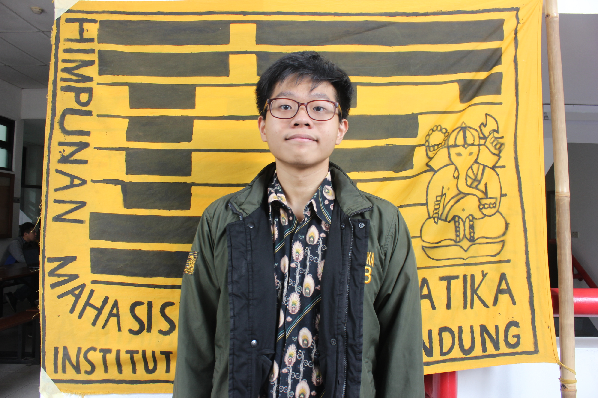
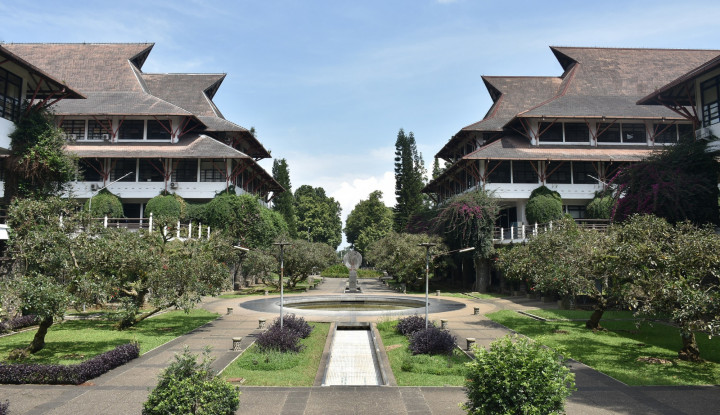

Hello,
I'am Jovan
Informatics Student
About Me
About

I'am Jovan Karuna Cahyadi
A passionate programmer who is eager to learn in the field of computer science and data science. Currently studying at Institut Teknologi Bandung, majoring Informatics Engineering.
Education
Institut Teknologi Bandung - Informatics Engineering
2018-Present
SMAK Sang Timur - Science Major
2015-2018

Experience
Graphics and Artificial Intelligence Laboratory Assistant
Institut Teknologi Bandung, Bandung – Aug 2019 - Present
Web Development Staff
AIChE Indonesia Student Conference 2021, Bandung – Jul 2020 - Present
- I build web components and web pages for Home, About, AISChat and Volunteer.
- Handle and implements client-side dual-language (English and Bahasa).
Tech Stack : React Hooks, Firebase
Back End Engineer Intern
Eduka System, Bandung – Jun 2020 - Aug 2020
- As a Back-End Engineer, I implements ranker system for tournament in 3 services (ranker service, ranker worker service, and ranker search service). I also made unit test for ranker service and ranker worker service using Go Mock and Go Test.
- I was given a task to make documentation in confluence for services.
- Restructuring ranker service file into ranker worker service's file structure.
Tech Stack : RabbitMQ, MongoDB, Elastic Search, Go, NodeJS
Practicum Assistant Computing
Comlabs - ITB, Bandung – Aug 2019 - Dec 2019
- As a practicum assistant, I am responsible to teach and accompany students during the practicum. I am also involved in grading the student's tasks.
- I teach basic computational thinking and basic programming in python language for 2 classes each consist of 40 students.
Skills : Python, Pandas